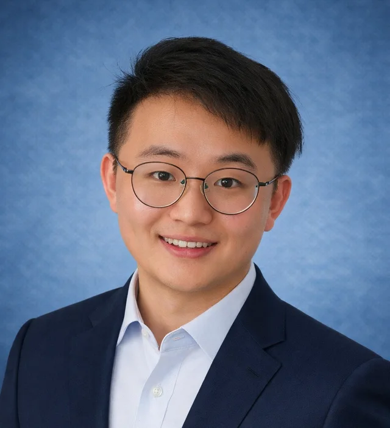

01
Amorphous coordination networks
Direct synthesis and transformation routes are used to access bulk hybrid glasses and disordered coordination networks without relying only on traditional melt-quenching.
Materials chemistry
MSCA Postdoctoral Fellow, KU Leuven
Hybrid glass frameworks for energy and separation technologies.
Research at the interface of coordination networks, glass formation, proton transport, and device-oriented processing.

Direct synthesis and transformation routes are used to access bulk hybrid glasses and disordered coordination networks without relying only on traditional melt-quenching.
Synchrotron PDF, XAS, solid-state NMR, impedance spectroscopy, and modelling are combined to understand how local order supports proton and ion transport.
Thin films, membranes, and patterned architectures are developed to connect hybrid glass chemistry with medium-temperature fuel cells, electrolysers, and separation systems.